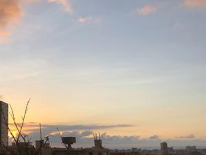
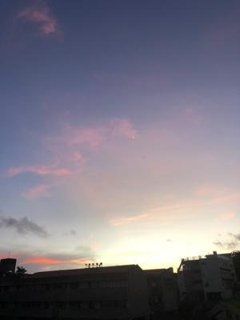
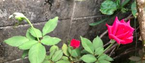

うるがいの話 ある日
最新: 数学の行列【うるがいの話 ある日】とは 一日だけのプログです
『うるがいの話』の最新一日だけのプログで、通信料が少なく経済的だ。カニの画像をクリックすると全ての日付が載る『うるがいの話』サイトを表示します
|
|
【うるがいの話】 うるがい(ｳﾙｶﾞｲ urugai)とは、『もずくがに』の名前でとても大きくなります。 |
|---|---|
|
|
【カミマヤーの話】 猫のことを方言でマヤーといいます。カミマヤー（kamimayaa）とは、神の猫のことです。 |
|
【たながぁの音楽】 たながぁ（ﾀﾅｶﾞｰ tanagaa）とは手長えびのことで、何種類かあり大きいのは車 エビぐらいになります。 |

|
【ぶながぁの話】 ぶながぁ(ﾌﾞﾅｶﾞｰ bunagaa)とは、赤い髪の毛、赤い身体、そして身長は１ｍ２０ｃｍ ぐらい、川の蟹を食べているの目撃された。場所は沖縄県国頭郡大宜味村のと ある村僕の隣近所に住んでいる爺さんから、聞いた話です。 |
|
|
【ギーマの話】 ギーマ(giima)とは、山原の里山に咲くスズランに似た、 花を付けます。実は食べられます、 気が付くと口の周りが紫になっています。 |
2022年09月23日 (金）数学の行列
15:47
 
近藤龍一の１２歳の少年が書いた 量子力学の教科書（２０１７年初版発行）
行列の力学 より
然し、行列が何かを説明しないまま行列力学を進めると不親切なので、先ずは
数学的準備ということで、行列の数学を整理しておきたい。「ご存知の方も多
いと思うが、行列はつい最近まで数学Ｃの一分野として高校で教えられていた
。然し、この科目は現在廃止されており（近々復活するという話もあるようだ
が）、数Ｃ廃止に伴い行列分野が高校の範囲から消えてしまったのだ。よって
現在、行列は大学の数学だが、もとは高校の範囲だったこともあり、あまり難
しくはない。
夜中３時に目が覚めた、灯りをつけ本を読むと高校で行列を教えていない！と
いう事にますます目が冴えた。ほー、では高校の数学は何を教えているのだろ
うか、ネットで調べると未だに復活していないようだ。しかし、１２歳とは下
手すると小学校６年生である。私が、習字の受業、筆で手のひらを真っ黒にし
て先生にビンタをくらった学年である。大学の卒論では行列を駆使したプログ
ラムを作成していた（多分）。

１５時４３分 ビットコインの総資産 ￥７、９７６↑